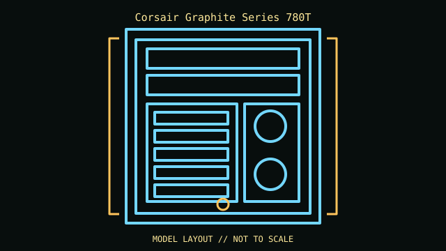

[ IDENTIFIED ENCLOSURE // E-ATX/XL-ATX FULL-TOWER ]
Corsair Graphite Series 780T
637 × 288 × 602 mm (H × W × D); E-ATX/XL-ATX full-tower. Board fit: Mini-ITX, microATX, ATX, E-ATX and XL-ATX; nine expansion slots. GPU: 355 mm maximum graphics-card length. CPU cooler: 200 mm maximum CPU-cooler height. Radiator: Front and roof each support up to 360 mm; bottom supports up to 240 mm with the HDD cage removed; rear supports up to 140 mm. Radiator thickness and simultaneous layouts are bounded by the manual. PSU: ATX PSU up to 260 mm.

REVISION / CONFIGURATION CAVEAT: The 780T is the large Graphite full tower; the white and black editions share the family layout, but verify SKU/accessories and bay brackets on used units.
Mechanical specifications and fit
| Exact model | Corsair Graphite Series 780T — E-ATX/XL-ATX full-tower. |
|---|---|
| Dimensions and construction | 637 × 288 × 602 mm (H × W × D); see cited manufacturer page/manual for measured envelope and revision-specific detail. |
| Motherboard form-factor fit | Mini-ITX, microATX, ATX, E-ATX and XL-ATX; nine expansion slots. |
| GPU clearance | 355 mm maximum graphics-card length. |
| CPU-cooler clearance | 200 mm maximum CPU-cooler height. |
| Radiator clearance | Front and roof each support up to 360 mm; bottom supports up to 240 mm with the HDD cage removed; rear supports up to 140 mm. Radiator thickness and simultaneous layouts are bounded by the manual. |
| PSU clearance | ATX PSU up to 260 mm. |
| Drive mounts | Two 5.25-inch external bays, six 3.5/2.5-inch combination trays, and three dedicated 2.5-inch mounts. |
Compatibility and service notes
Inspect the hinged panels, latches, dust filters, fan controller and removable drive cages before moving a used case; its width/depth and mass require clearance.
- Check GPU length and thickness, its power-plug bend, cooler height and radiator/fan assembly against the same installed configuration; advertised maxima may conflict.
- Confirm motherboard standoffs match the board holes and inspect front-panel, USB and fan-controller headers before powering the build.
- Record the exact SKU, manual revision, removed brackets and unused drive hardware. Measure the individual chassis before shipping or fitting nonstandard parts.
Manufacturer and manual sources
- Corsair Graphite Series 780T — manufacturer product specificationsManufacturer product/model page; use the SKU and configuration that match the specimen.
- Corsair — Graphite 780T installation manualModel-specific installation/manual reference for mounting diagrams and configuration limits.
Clearance limits describe separate manufacturer fit conditions; they are not a promise that all maximum-size parts fit simultaneously. Confirm the exact revision before purchase or installation.